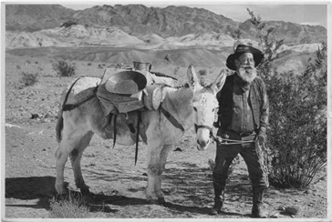

Founded in 1873 by an out of luck prospector who, in a state of delirium, bought some "gold seeds"
with the misplaced hope that, instead of wiling away by a stream, he could grow his gold. Alas, instead
of gold, he found highly nutritious, delicious, and beautiful carrots springing up.

Ever since that fateful day, we have been determined to provide the best carrot seeds in the world.
Dedicated to quality and maximizing profits, we take utmost care in seed production to guarantee excellence.
Our carrots are cage free and free range. Pesticide, fibreglass, and radiation free. We take pride in just how tasty, and non-lethal, our carrots
are.